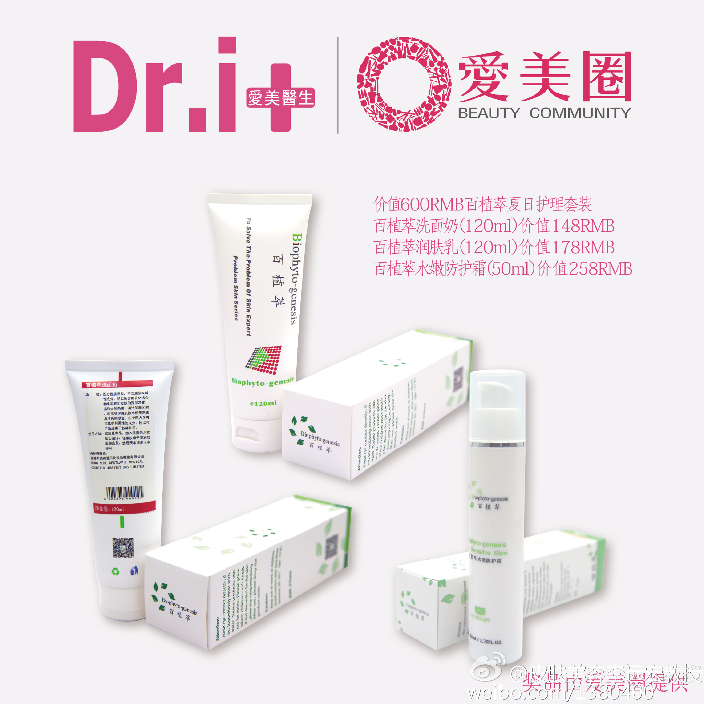
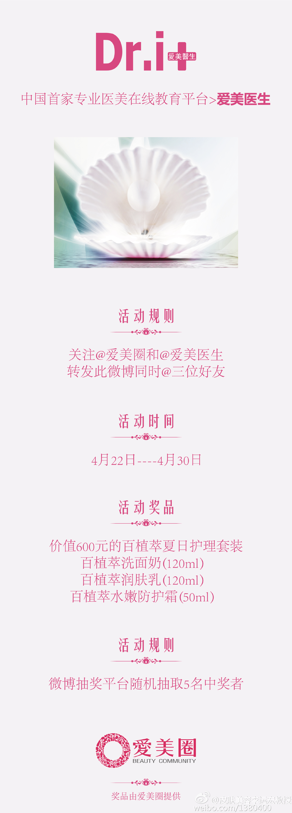

@catbert @EmmaYU1999 @onavon 从微博推荐的最近联系人里选取AT。 一周后看看抽奖结果。 查看图片@皮肤美容李远宏教授:#免费活动# 李远宏教授送福利， 600元百植萃护理套装免费领！关注@Dri爱美圈 和@爱美医生 ，转发此微博同时@三位好友，4月30日12时用@微博抽奖平台 抽取5名中奖者。奖品包含百植萃洗面奶（120ml）+百植萃润肤乳（120ml）+百植萃水嫩防护霜（50ml），夏日护肤不发愁，赶紧转起来吧！ 